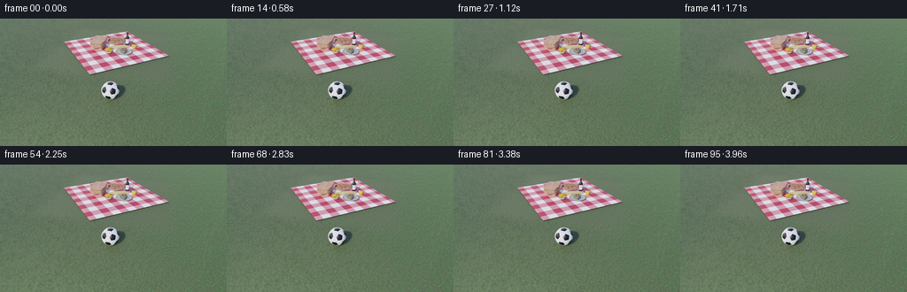
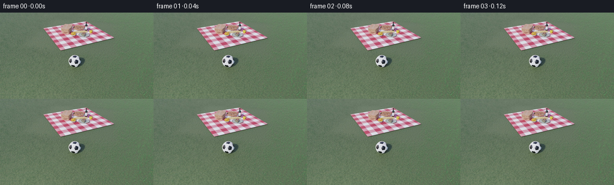

CODING AGENTS AS PIXEL WORLD MODELS
traex/GPT-6.1-Sol · pcve_0082
点击播放 · 原生 RGB 像素
编辑前的完整原视频
上方为编辑结果；原视频是模型获准使用的输入。下方为逐轮保存的编辑候选。
逐轮保存的候选
回放视频、检查图与代码变化。
每份候选均可单独播放。实际图片检查记录在下方工具轨迹中。
候选 01播放与检查图
点击播放 · 原生 RGB 像素


展开代码变化
--- 上一保存版本
+++ 本次保存版本
@@ -0,0 +1,71 @@
+"""Remove the falling apple and the impulse it imparted to the resting ball.
+
+All image information comes from the supplied source RGB tensor. The camera
+and picnic still life are stationary, so later unobstructed samples provide
+the exact background for the apple's airborne path. The original ball and
+its contact shadow provide the counterfactual, unstruck ball.
+"""
+from pathlib import Path
+
+import numpy as np
+from scipy.ndimage import binary_dilation, distance_transform_edt
+
+import artifact_io
+
+
+def feathered_footprint(core):
+ # Include the low-contrast antialiasing and compression halo, followed by
+ # one pixel of gentle blending into the otherwise untouched source.
+ solid = binary_dilation(core, iterations=2)
+ distance = distance_transform_edt(~solid)
+ return np.clip(2.0 - distance, 0.0, 1.0).astype(np.float32)
+
+
+def generate(case_dir):
+ case_dir = Path(case_dir)
+ source = np.load(case_dir / "source_pixels.npz")["rgb"]
+ assert source.shape == (96, 144, 256, 3)
+ rgb = source.astype(np.float32)
+ yy, xx = np.mgrid[:144, :256]
+
+ # The apple enters from above at source frame 9. Before its collision,
+ # its projected path is nearly vertical at x=134; its ground shadow
+ # travels diagonally toward the ball. Later frames expose this still life.
+ uncovered = np.median(rgb[40:], axis=0)
+ upper_domain = (
+ ((xx >= 126) & (xx <= 144) & (yy < 68))
+ | ((xx >= 143) & (xx <= 196) & (yy >= 24) & (yy < 77))
+ )
+ upper_delta = np.max(np.abs(rgb[:13] - uncovered), axis=(0, 3))
+ upper_core = upper_domain & (upper_delta > 6)
+ upper_alpha = feathered_footprint(upper_core)
+
+ # In the factual source the apple hits the ball at frame 14, the ball
+ # rolls left, and the apple rolls right. With the apple absent, neither
+ # motion occurs. Reuse frame 1's resting ball, including its original
+ # shading and shadow, wherever this complete interaction changed pixels.
+ resting = rgb[0].copy()
+ lower_domain = (yy >= 68) & (yy <= 98) & (xx >= 59)
+ lower_delta = np.max(np.abs(rgb - resting), axis=(0, 3))
+ lower_core = lower_domain & (lower_delta > 6)
+ lower_alpha = feathered_footprint(lower_core)
+
+ result = rgb.copy()
+ result = (
+ result * (1 - upper_alpha[None, ..., None])
+ + uncovered[None] * upper_alpha[None, ..., None]
+ )
+ result = (
+ result * (1 - lower_alpha[None, ..., None])
+ + resting[None] * lower_alpha[None, ..., None]
+ )
+ frames = np.clip(np.rint(result), 0, 255).astype(np.uint8)
+ artifact_io.save(frames, case_dir)
+ print("Saved 96 counterfactual RGB frames at 256x144, 24 fps.")
+ print("Apple/path footprint:", int(np.sum(upper_alpha > 0)), "pixels")
+ print("Collision/rolling footprint:", int(np.sum(lower_alpha > 0)), "pixels")
+ return frames
+
+
+if __name__ == "__main__":
+ generate(Path(__file__).resolve().parent)
可观测工具轨迹
实际执行的命令与返回图片。
命令 1exit 0
/bin/bash -lc 'ls -la && cat prompt.txt && cat GENERATION_RULES.md'
命令 2exit 0
/bin/bash -lc 'cat source_info.json && cat task_spec.json && cat artifact_io.py'
命令 3exit 0
/bin/bash -lc "python - <<'PY'
import numpy as np
z=np.load('source_pixels.npz');print(z.files)
a=z[z.files[0]];print(a.shape,a.dtype)
if a.ndim==4:
print(a[0,0,0]); print('range',a.min(),a.max())
PY"命令 4exit 0
/bin/bash -lc "python - <<'PY'
import numpy as np
from scipy import ndimage
A=np.load('source_pixels.npz')['rgb']
for t in [0,12,24,36,48,60,72,84,95]:
a=A[t].astype(float);r,g,b=a.transpose(2,0,1)
masks={'red':(r>g*1.4)&(r>b*1.4)&(r>65),'yellow':(r>100)&(g>70)&(b<.65*g),'blue':(b>1.25*r)&(b>1.15*g),'green':(g>1.25*r)&(g>1.15*b),'dark':(a.max(2)<45),'white':(a.min(2)>180)}
print('\\nFRAME',t)
for name,m in masks.items():
labs,n=ndimage.label(m)
comps=[]
for j,s in enumerate(ndimage.find_objects(labs),1):
cnt=(labs[s]==j).sum()
if cnt>=8:comps.append((int(cnt),(s[1].start,s[0].start,s[1].stop-1,s[0].stop-1),np.round(a[labs==j].mean(0),1).tolist()))
print(name,sorted(comps,reverse=True)[:12])
print('Top quantized colors frame0')
a=(A[0]//16)*16
vals,cts=np.unique(a.reshape(-1,3),axis=0,return_counts=True)
for j in np.argsort(cts)[-25:][::-1]: print(vals[j],cts[j])
PY"命令 5exit 0
/bin/bash -lc "python - <<'PY'
import numpy as np
from scipy import ndimage
A=np.load('source_pixels.npz')['rgb']
a=A[0].astype(float)
def label(a):
r,g,b=a.transpose(2,0,1);c=np.full(r.shape,'.',dtype='<U1')
c[(g>r+8)&(g>b+8)]='g'
c[(r>g+12)&(r>b+8)]='o'
c[(r>g+25)&(b>g+10)]='r'
c[(r>145)&(g>120)&(b<g*.7)]='Y'
c[(b>r+10)&(b>g+5)]='b'
c[a.max(2)<65]='d';c[a.max(2)<35]='K'
c[a.min(2)>175]='w';c[a.min(2)>215]='W'
return c
c=label(a)
for y in range(0,144,2):print(f'{y:03}', ''.join(c[y,::2]))
print('\\nDETAIL x65:185 y15:66')
for y in range(15,66):print(f'{y:03}', ''.join(c[y,65:186]))
# object-change localization for temporal steps
for i,j in [(0,12),(12,24),(24,36),(36,48),(48,60),(60,95)]:
d=np.max(abs(A[i].astype(int)-A[j]),2)>25;l,n=ndimage.label(d);cs=[]
for k,s in enumerate(ndimage.find_objects(l),1):
ct=(l[s]==k).sum()
if ct>5:cs.append((ct,(s[1].start,s[0].start,s[1].stop,s[0].stop)))
print(i,j,sorted(cs,reverse=True)[:30])
PY"命令 6exit 0
/bin/bash -lc "python - <<'PY'
import numpy as np
from scipy import ndimage
A=np.load('source_pixels.npz')['rgb'];a=A[0].astype(int);r,g,b=a.transpose(2,0,1)
for name,m in [('orange',(r>g+12)&(g>b+8)),('pink',(r>g+30)&(b>g+10)),('dark',(a.max(2)<100)),('nongreen',~((g>r+8)&(g>b+8)))]:
l,n=ndimage.label(m);print(name)
for k,s in enumerate(ndimage.find_objects(l),1):
ct=(l[s]==k).sum()
if ct>8:print(ct,(s[1].start,s[0].start,s[1].stop,s[0].stop),a[l==k].mean(0).round(1))
for t in [0,6,12,16,20,24,32,48,95]:
a=A[t].astype(int);print('\\nFrame',t,'x128:158,y52:80:')
c=np.full(a.shape[:2],'.',dtype='<U1');r,g,b=a.transpose(2,0,1)
c[(g>r+8)&(g>b+8)]='g';c[(r>g+12)&(g>b+8)]='O';c[(r>g+25)&(b>g+10)]='r';c[(b>r+10)&(b>g+5)]='b';c[a.min(2)>175]='w';c[a.max(2)<80]='d';c[a.max(2)<40]='K'
for y in range(52,80):print(f'{y:03}', ''.join(c[y,128:158]))
PY"命令 7exit 0
/bin/bash -lc "python - <<'PY'
import numpy as np
from scipy import ndimage
A=np.load('source_pixels.npz')['rgb'].astype(int)
for t in range(0,40):
a=A[t];r,g,b=a.transpose(2,0,1)
m=(r>g+12)&(g>b+8);l,n=ndimage.label(m);cs=[]
for j,s in enumerate(ndimage.find_objects(l),1):
ct=(l[s]==j).sum()
if ct>10:cs.append((ct,(s[1].start,s[0].start,s[1].stop-1,s[0].stop-1),a[l==j].mean(0).round(0).tolist()))
d=np.max(abs(a-A[0]),2)>22
# main static area
print(t,'orange',cs,'changes top',int(d[:60].sum()),'total',d.sum())
# pixel numeric rows of apple potential x137..150 y12..29
for y in range(12,30):
print(y,['%02x%02x%02x'%tuple(p) for p in A[0,y,136:151]])
PY"命令 8exit 0
/bin/bash -lc "python - <<'PY'
import numpy as np
from scipy import ndimage
A=np.load('source_pixels.npz')['rgb'].astype(int)
for t in range(0,18):
d=np.max(abs(A[t]-A[0]),2)
l,n=ndimage.label(d>10)
cs=[]
for k,s in enumerate(ndimage.find_objects(l),1):
ct=(l[s]==k).sum()
if ct>2:cs.append((int(ct),(s[1].start,s[0].start,s[1].stop-1,s[0].stop-1),int(d[l==k].max())))
print(t, sorted(cs,reverse=True)[:20])
# soccer region difference f0:f12
for t in [1,3,6,8,9,10,11,12,13]:
d=np.max(abs(A[t]-A[0]),2);ys,xs=np.where((d>10)&(np.indices(d.shape)[0]>=65));print(t,'bottom changes',list(zip(xs[:30],ys[:30],d[ys[:30],xs[:30]])))
# Determine background variation frames 0:last.
d=A[95]-A[0]
for box in [(0,0,256,144),(0,0,60,144),(160,0,256,65),(0,95,256,144),(60,70,143,94),(120,2,161,74)]:
x0,y0,x1,y1=box;s=d[y0:y1,x0:x1];print(box,'mean',s.mean((0,1)), 'abs percentiles',np.percentile(abs(s),[50,90,99,100]))
PY"命令 9exit 0
/bin/bash -lc "python - <<'PY'
import numpy as np
A=np.load('source_pixels.npz')['rgb'].astype(int)
for t in [0,1,3,6,8,12,13,18,95]:
print('\\n',t)
for y in range(25,35):print(y, ' '.join('%3d'%p for p in A[t,y,181:196,1]))
print('t0->3->95 diff region')
for t in [3,6,95]:
d=A[t]-A[0]
for y in range(26,34):print(t,y, ' '.join('%3d'%p for p in d[y,181:196,1]))
print('top object frame8/9 RGB')
for t in [0,7,8,9]:
for y in range(0,5):print(t,y,A[t,y,130:141].tolist())
PY"命令 10exit 0
/bin/bash -lc "python - <<'PY'
import numpy as np
from scipy import ndimage
A=np.load('source_pixels.npz')['rgb'].astype(float)
ref=np.median(A[40:],axis=0);d=np.max(abs(A[:13]-ref),axis=(0,3))
# read max changes for upper region
for y0,y1 in [(0,18),(18,26),(26,35),(35,43),(43,52),(52,61),(61,70)]:
m=(d[y0:y1]>6);l,n=ndimage.label(m);print(y0,y1)
for k,s in enumerate(ndimage.find_objects(l),1):
ct=(l[s]==k).sum()
if ct>=3:print(int(ct),(s[1].start,s[0].start+y0,s[1].stop,s[0].stop+y0),d[y0:y1][l==k].max())
# initial shadow size/position against late clean
print('Initial shadow diff >5')
d0=np.max(abs(A[0]-ref),2)
for y in range(24,38):
print(y,''.join('X' if v>6 else '+' if v>3 else '.' for v in d0[y,174:198]))
# highest unchanged-region variation
print('soccer initial still diff',np.max(abs(A[:13,71:94,111:143]-A[0,71:94,111:143]),axis=(1,2,3)))
PY"命令 11exit 0
/bin/bash -lc "python generate.py && python - <<'PY'
from pathlib import Path
import numpy as np
p=Path('.')
z=np.load(p/'pixels.npz')['pixels']
assert z.shape == (144,256,96)
assert len(list((p/'frames').glob('*.png'))) == 96
print('Verified pixels.npz, 96 frame PNGs, and index.html:',(p/'index.html').is_file())
# Quantitative intervention and no-impulse checks.
a=z.transpose(2,0,1)
out=np.stack([(a>>16)&255,(a>>8)&255,a&255],-1).astype(np.uint8)
s=np.load('source_pixels.npz')['rgb']
print('Max change at resting ball over timeline:',np.abs(out[:,71:94,111:143].astype(int)-out[0,71:94,111:143]).max())
print('Final rolling-left area non-ground pixels:',int(((out[-1,70:94,60:100,0].astype(int)>out[-1,70:94,60:100,1].astype(int)+10)|(out[-1,70:94,60:100].min(2)>170)).sum()))
print('Changed pixel count:',np.any(out"'!=s,3).sum())
print('"'Required artifacts:',[(f,(p/f).stat().st_size) for f in ['generate.py','pixels.npz','index.html','inspection.png','transition_check.png']])
PY"保存候选 1 份；完成命令 11 次；可验证图片返回 0 张。原始 API 响应与完整日志保留在本地。